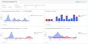

Classi開発者ブログ
https://tech.classi.jp/
教育プラットフォーム「Classi」を開発・運営するClassi株式会社の開発者ブログです。
フィード
株式会社万葉のみなさんとエンジニア交流会を実施しました 1
1
Classi開発者ブログ
こんにちは、エンジニアの id:kiryuanzu です。 2024年の1月に Classi のオフィスで 株式会社万葉のエンジニアの方々と交流会を実施しました。 今回の記事では万葉さんとの交流会の様子を紹介した上で、他社との交流会を実施してみての振り返りレポートを紹介します。 経緯 去年の RubyWorld Conference の交流イベントの場で万葉の大場さんとお会いし、コードレビューに関する悩みを相談したところ、とても丁寧にアドバイスしていただきました。 tech.classi.jp ベテラン Rubyist の方からコードレビューについての考え方を熱弁していただいたりなど楽しい出来…
10日前

たった1行のPRでチームの"速さ"を可視化できる計測基盤を作った話 3
Classi開発者ブログ
こんにちは、データプラットフォームチームの鳥山(@to_lz1)です。エンジニアの皆さん、自分のチームのパフォーマンス、計測していますか？ DevOps Research and Assessment（DORA）の2019年のレポート により、開発チームのパフォーマンスを示す指標として提唱された「Four Keys」。この中に「デプロイ頻度」「変更のリードタイム」という指標があります。 『LeanとDevOpsの科学』など有名な書籍で取り上げられたこともありFour Keysそのものが広く知られるようになりましたが*1、この度Classiでもこれらの指標を可視化するダッシュボードを構築し、社内…
13日前

リードタイムを測るシェルスクリプトを作ってチームの振り返り会を活発にした話
Classi開発者ブログ
こんにちは。エンジニアのすずまさです。 去年の夏頃にリードタイムの計測を始めてから、振り返りで良い気づきを得られるようになったりリードタイムを減らすアクションが生まれたりと良いことがたくさんあったので、今回はその紹介をしようと思います。 リードタイムの定義 『LeanとDevOpsの科学』では、リードタイムを「コードのコミットから本番稼働までの所要時間」として定義しています。 私たちのチームのリポジトリではブランチ戦略としてGitHub Flowを採用しており、mainへのマージと本番稼働のタイミングが近しいため「PRをopenしてからマージするまでの期間」をリードタイムとして定めて計測しまし…
1ヶ月前
SLO本読書会、監訳者である山口能迪さんを囲んでSLOの理解を深める会を実施しました
Classi開発者ブログ
こんにちは。プロダクト本部プラットフォーム部SREチームの id:ut61z です。 SREチームが主体となってSLO本読書会を社内で実施しました。 そしてなんと贅沢なことに、監訳、翻訳に携わった Google Cloud の Developer Relations Engineer である山口能迪さん(@ymotongpoo、以下山口さん)にゲストとしてお越しいただき、読書会で出てきた疑問をぶつけてSLOについて理解を深める会を開催しました。 今回は読書会、そして山口さんを囲んでSLOの理解を深める会について、経緯や読書会の進め方、学んだことなどをレポートしたいと思います。 SLO本とは? …
1ヶ月前
コスト削減成功！Amazon Auroraの監査ログをS3に保存する仕組みを構築した話
Classi開発者ブログ
こんにちは。プロダクト本部Growth部でエンジニアをしている id:ruru8net です。 前回はこちらの記事を書かせていただきました。 tech.classi.jp 今日は前述したSRE留学中にやったことの中の「Amazon Auroraの監査ログをCloudWatch Logsを経由せずS3に保存する」を紹介したいと思います。 前提 前掲の記事にもある通り、弊社のAWSにかかっているコストを調査したところCloudWatch Logsの特にAmazon RDSの監査ログの保存にコストがかかっていることがわかりました。今回は弊社で最も使用しているAmazon AuroraのMySQLのみ…
2ヶ月前
RubyWorld Conference 2023 に参加しました
Classi開発者ブログ
こんにちは！エンジニアの id:kiryuanzu です。最近はよく GitHub Actions のワークフローいじりをしています。 今回の記事は11/9(木)〜11/10(金)に筆者が参加した RubyWorld Conference 2023 の参加レポートです。 2023.rubyworld-conf.org RubyWorld Conference とは? RubyWorld Conference は島根県松江市で年1回開催される Ruby のビジネスカンファレンスです。通称 RWC と呼ばれています。 公式サイトでは以下のように開催概要について説明されています。 RubyWorld…
3ヶ月前
Classiの個別最適化エンジン CALE v2.0リリースまでの進化
Classi開発者ブログ
はじめに ClassiのPythonエンジニアで AL（アダプティブラーニング）チームのエンジニアリードの工藤 (id:irisuinwl) です。こんにちは。 最近のマイブームは寿司を握ることです。 さて、今回の記事ではアダプティブラーニングエンジン CALE の進化について書きたいと思います。 CALEとは、ざっくりいえば生徒の解答履歴を分析して能力を推定し、成績向上に役立つ問題を推薦するレコメンドエンジンです。 詳しくは以前の記事を参照ください: tech.classi.jp tech.classi.jp Classiでは今年、新機能である学習トレーニング機能（以下、学トレ）をリリースし…
4ヶ月前
Cloud Composerローカル開発ツールで運用業務を圧倒的に楽にする
Classi開発者ブログ
こんにちは、データプラットフォームチームでデータエンジニアをしています、鳥山(@to_lz1)です。 本記事は datatech-jp Advent Calendar 2023 11日目の記事です。 データ基盤を運用する皆さま、ジョブの実行管理基盤には何を用いているでしょうか？ 様々なOSSやサービスが群雄割拠するこの領域ですが、Google Cloud Platform(以下、GCP) のCloud Composerは選択肢の一つとして人気が根強いのではないかと思います。 一方、同サービスには時折「運用がつらい」とか「費用が高い（故に、開発者が気軽に触れる開発環境を用意できない）」といった言…
4ヶ月前
Browserslist + GitHub Packageでサポート対象への対応を簡単にする
Classi開発者ブログ
こんにちは！エンジニアのすずまさです。 皆さんが開発しているプロダクトでは、サポート対象の OS やブラウザのバージョンは規定されていますか？ Classi ではそういった推奨環境が定められています。 ビルド後に推奨環境で動作させるために、社内で GitHub Package として公開された Browserslist の設定ファイルを使ったところ体験が良かったので、今回はその紹介をしようと思います。 Browserslist とは browserslist/browserslist: 🦔 Share target browsers between different front-end to…
4ヶ月前
今年はAdvent calendarをやらないと決めた話
Classi開発者ブログ
みなさん、こんにちは。日頃からClassi開発者ブログをご覧いただき、ありがとうございます。編集部のid:tetsuro-ito です。 すっかり秋も深まって寒くなってきました。今年の夏は暑く、冬も暖冬傾向が続くそうですが、寒いものはやはり寒いですね。季節の変わり目は体調を崩しやすい時期なので、注意したいところです。 さて、冬になると、IT業界では恒例のイベントとなったAdvent calendarがさまざまな切り口で開催されます。 Classiも2016年から毎年このイベントの企画をやってきました。 Classi Advent Calendar 2016 Classi Advent Cale…
4ヶ月前
「Terraform活用大全 - IaCの今。」に登壇してきました
Classi開発者ブログ
こんにちは、 Classi でソフトウェアエンジニアやってます koki です。 Findy さま主催の「Terraform活用大全 - IaCの今。 Lunch LT」に「Terraform に test コマンドがやってきた」というタイトルで登壇してきました。 Togetter まとめ イベントのアーカイブ動画は Findy にログインするとイベントページから閲覧できます。 登壇のきっかけ SNS 経由で Findy さまからお声がけいただきました。 よく Zenn で Terraform に関する記事を書いていたのを見ていただけたようです。 ちょうど最近リリースされたTerraform …
4ヶ月前
SRE留学体験記(第3期生)
Classi開発者ブログ
こんにちは。プロダクト本部Growth部でエンジニアをしている id:ruru8net です。以前はこちらの記事を書かせていただきました。 tech.classi.jp tech.classi.jp この度わたしはSRE留学の第3期生として、2023年5月-10月の半年間SREチームに留学をしました。 SRE留学とは？や、第1期生、2期生の体験記はこちらをご覧ください。 tech.classi.jp tech.classi.jp SRE留学を志望した理由 留学以前は主に認証機能の運用開発をするプロダクトチームで仕事をしていました。弊社のプロダクトチームはただアプリケーションコードの実装をするだ…
4ヶ月前
Step Functions を使って、ECS のワンショットタスクを実行する
Classi開発者ブログ
こんにちは、プロダクト開発部の藤田です。 今回は Amazon ECS(以下、ECS) と AWS Step Functions(以下、Step Functions) を組み合わせた「ワンショットタスクの実行基盤」についてご紹介します。 「ワンショットタスク」とは、指定されたコマンドやスクリプトを1度だけ実行して、終了するタスクのことです。 このようなワンショットタスクは「プライベートネットワークの内側にあるリソースへのアクセスが必要な、非定型的な操作」を実行する際などに用いられます。 例えば、プライベートネットワークの内側にある DB に対して、以下のような作業をエンジニアが実施する際に、s…
4ヶ月前
社内npm packageをRenovateで更新する方法
Classi開発者ブログ
こんにちは、 Classi でソフトウェアエンジニアやってます koki です。 この記事では、 Renovate によって Classi の社内向け npm package を自動アップデートさせるために行った設定についてまとめます。 概要 Classi では、社内向けの共通ライブラリや Docker イメージなどを GitHub Packages で管理しています。 この GitHub Packages の利用により、それらのプライベートなパッケージを社内の様々なシステムから安全且つ効率的に利用することを実現しています。 例えば、今年の 6 月にプレスリリースが出された学習トレーニング機能…
5ヶ月前
Lambda Extensionと自家版OpenTelemetry Collector
Classi開発者ブログ
こんにちは・こんばんは・おはようございます、エンジニアのid:aerealです。 以前、 実践OpenTelemetry - Classi開発者ブログ で紹介したようにOpenTelemetryを監視フレームワークとして導入しています。 前回の記事ではECSサービスで動くGoで書かれたWebアプリケーションへ導入しましたが、今回はAWS Lambdaの関数からOpenTelemetryを用いてDatadogにトレースを送るための試行錯誤について紹介します。 LambdaからDatadogにトレースを送りたい AWS Lambdaは小〜中程度のタスクを大量に実行することに向いたFaaSです。 汎…
5ヶ月前
ライブラリのアップデートを自動化した仕組みの紹介
Classi開発者ブログ
こんにちは！学習動画・Webテストの開発を行っています エンジニアの daichi (id:kudoa) です。 この記事では、最近チームで導入したライブラリアップデートを自動化した仕組みとその経緯について紹介します。 なぜ自動化しようと思ったか サービスを開発するだけではなく、日々の運用も必要です。 その運用業務の1つとして、ライブラリのアップデートがあります。 これはサービスを運用する上では大切なことではありますが、日々ライブラリアップデートのPRをさばき続けるのも大変です。 その時間をできるだけ減らし、その分空いた時間をユーザーへの価値提供や将来の投資に充てるために、今回の自動化の仕組み…
6ヶ月前
データサイエンス×教育：取り組みから実感した教育分野のPoCのおもしろさ
Classi開発者ブログ
こんにちは。データサイエンティストの石井です。 今回は、複数の問題を組合せた問題の集合（以降、問題集という）を推薦するアイデアのPoCに取り組みました。今回の取り組みの中ではこのアイデアが有効かの判断には至りませんでしたが、具体的にどのような取り組みを行ったのか、またそこで直面した教育分野のPoC特有のおもしろさについて紹介します。 なぜ問題集の推薦に取り組むのか 2023年5月31日に公開したプレスリリースのとおり、新しい学び支援機能としてAI搭載の「学習トレーニング」機能の提供を始めました。 参考：生徒の自律性とAIによる個別最適な学びを両立する「学習トレーニング」機能を6月にリリース こ…
6ヶ月前
実践OpenTelemetry
Classi開発者ブログ
こんにちは・こんばんは・おはようございます、エンジニアのid:aerealです。 この記事では筆者が開発に参加しているサービスの監視フレームワークをOpenTelemetryへ移行した際の体験を紹介します。 OpenTelemetryとは OpenTelemetry is an Observability framework and toolkit designed to create and manage telemetry data such as traces, metrics, and logs. What is OpenTelemetry? サイトの説明にある通り分散トレースやメトリ…
6ヶ月前
テスト自動化〜運用編〜
Classi開発者ブログ
こんにちは！Classi QAチームの池田です。 今回は、Classiで取り組んでいるテスト自動化の運用についてご紹介します！ 弊社ではテスト自動化ツールにAutifyを使用しており、テストを自動化したお話についてはこちらの記事で紹介しておりますので、よろしければご覧ください！ 運用の取り組み①定期実行 運用の取り組み②開発のテスト工程での自動テスト活用 運用の取り組み③シナリオ改善作業 運用の取り組み④ナレッジ蓄積 運用の取り組み⑤開発メンバーへの自動テスト解放 さいごに 運用の取り組み①定期実行 弊社のQAエンジニアは、各開発チームに「専任QA」として配属されています。 私が専任QAとして…
6ヶ月前
プロダクト本部の誕生と組織変更の狙い
Classi開発者ブログ
みなさん、こんにちは。プロダクト本部 本部長のid:tetsuro-ito です。Classiでは、8月に組織体制を再編して新たな組織体制に移行しましたので、今日はその内容と狙いを説明します。 以前のブログでも組織に関する話を紹介しており、その継続的な話になるため、あらかじめ参考記事として紹介しておきます。 チームトポロジーを参考に新組織の編成を考えた話 開発本部でレポートラインを整理してユニット制度を導入した話 なぜ組織変更をしたか 昨年の記事でチームトポロジーを参考に組織編成を考えた話を紹介しました。当時も念頭においていたのはプロダクトの開発をよりスムーズに行えるようにし、事業目標を達成し…
7ヶ月前
【開発者インタビュー #4】小川 耀一朗
Classi開発者ブログ
こんにちは！Classiで働く開発者インタビューシリーズ企画の第4回は、データAI部の小川さんです。 まず簡単に自己紹介をお願いします 2020年4月に新卒でClassiに入社しました。開発本部のプロダクト開発部に配属され、その後2022年7月に同じ開発本部のデータAI部に異動しました。 ー どのような経緯でデータAI部に異動したのですか？ 大学で機械学習に関する研究を行っていたため、就職活動の時からデータAI部に興味がありました。ただ、プロダクト開発にも興味があったり、当時は配属がプロダクト開発部しかなかったため、まずはソフトウェアエンジニアとしてプロダクト開発部に配属となりました。その時か…
7ヶ月前
AWS GlueからAWS Batchにしたことで費用を75%削減した
Classi開発者ブログ
こんにちは、最近データエンジニア業を多くやっているデータサイエンティストの白瀧です。 これまでClassiのデータ基盤は、Reverse ETLをしたり監視システムを導入したりとさまざまな進化をしてきました。しかし、Classiプロダクトが発展するとともにデータ量が増加し、これまでのデータ基盤では耐えられない状態に近づいてきました。 そこでデータ基盤の一部（DBからのExportを担う部分）のリアーキテクチャを実施したので、この記事で紹介したいと思います。 概要 Classiのデータ基盤では、Amazon RDSからAmazon S3へJSONで出力し、その後GCS→BigQueryという流れ…
8ヶ月前
ブラウザ拡張機能をChatGPTと作成した記録
Classi開発者ブログ
先日「Google Meet Chat to Clipboard」というChrome拡張機能を公開しました。Google Meetから退出する時に、チャットが残っていれば自動でクリップボードに保存するというものです。 このアイデアは、社内のSlackでたびたび見かけた「Google Meetのチャットを保存し忘れた」という問題から生まれました。 個人のプロジェクトとして作成・公開しましたが、きっかけは社内にありました。そして、ChatGPTに併走してもらいながら制作した過程について少し話したところ、思った以上に興味をもってもらい、ここで紹介することになりました。 こういった弊社での小ネタ的Ch…
8ヶ月前
ユーザーインタビューを経て学んだこととユーザーと話すことのすすめ
Classi開発者ブログ
こんにちは！プロダクト開発部のすずまさです。 今回は、ある新機能を追加するプロジェクトでユーザーインタビューをしてみたら、予想外の回答がたくさん返ってきて「ユーザーに話を聞きに行っといてよかった…」となった話をしようと思います。 経緯 マネージャーから「CS（カスタマーサクセス）によるとここの機能の改善要望が提案校に対して50%あるみたいです！」と連絡を受けたことをきっかけに、やる価値は大きそうだと判断しプロジェクトが始動しました。 エンジニアとマネージャーで話し合った結果、大きく分けて3パターンのUI案が出揃いました。 3案のうち、どのUIパターンがユーザーに適切かを判断するべく、何校かの学…
8ヶ月前
【開発者インタビュー #3】小林 健太
Classi開発者ブログ
こんにちは！Classiで働く開発者インタビューシリーズ企画の第三弾は、プロダクト開発部の小林さんです。 まず簡単に自己紹介をお願いします 小林健太と申します。私はClassiのQAチームに所属し、QAエンジニアとして働いています。 Classiに入社する前は、第三者検証サービス*1を提供する会社で新卒で入社し約2年間ほど働き、その中で保険やECSサービスに関する検証業務を担当していました。 Classiには2020年2月に業務委託としてジョインし、2021年4月から正社員として働いています。主にClassiのプロダクトに関する検証業務や、Classi全社の品質情報見える化の取り組みなどを行っ…
9ヶ月前
GitHub Actions と Release Please を使ったアプリケーションのリリース自動化
Classi開発者ブログ
GitHub Actions と Release Please を使ったアプリケーションのリリース自動化 こんにちは @lacolaco です。最近は、先日プレスリリースが出された「学習トレーニング」機能を裏で支えているコンテンツ管理システム（以下内部CMS）の開発に携わっています。 corp.classi.jp この記事では、内部CMSのフロントエンド（Angular アプリケーション）のリリースフローを自動化している仕組みを紹介します。現在のリリースフローの全体像は次の図のようになっています。この中にある Release Please というのが、今回特に紹介したいツールです。いくつか日本…
10ヶ月前
In-App Reviewで荒廃したアプリ評価が爆上がりした話
Classi開発者ブログ
突然ですが、観た映画やドラマやアニメなどがすごく面白くて世間の評価はどうなってるんだろうとレビューサイトを見てみたら、思いのほか評価が悪くてしゅんとなった経験はありますか？ちなみに僕はあります。 ご挨拶が遅れてごめんなさい、こんにちは！Classiでモバイルエンジニアをしています、楠瀬大志（id:indiamela）です。 今回はIn-App Reviewを用いて弊社のAndroidアプリの評価が1.8→3.7まで爆上がりしたお話をしたいと思います。 In-App Reviewを簡単に説明すると、アプリ内で任意のタイミングでアプリのストアレビューを依頼できる、というものです。わざわざストアを立…
10ヶ月前
中立的なGraphQLスキーマの管理
Classi開発者ブログ
こんにちは、id:aerealです。 今回はGraphQLのスキーマ管理を工夫している点について紹介します。 背景 対象となるアプリケーションは先日プレスリリースが出された学習トレーニング機能を裏で支えているコンテンツ管理システム (以下、内部CMS) で、エンドユーザ向けを含む複数のサービスから呼び出されます。またAngularで書かれたWeb UIを備えます。 内部CMSを開発するチーム内には主にサーバサイドを担当するメンバーと、主にクライアントサイドを担当するメンバーとがおり、どちらもGraphQLを用いた開発経験があります。 この内部CMSはスクラッチから開発を始めており、目指すリリー…
10ヶ月前
SRE留学で体感したプロダクトチームとSREチームの違い
Classi開発者ブログ
こんにちは。プロダクト開発部の id:ut61z です。 私は 2022/10 からSRE留学という社内制度を利用して、SREチームに所属しています。弊社のSRE留学制度については以下のliaob88さんの記事に詳しいので興味がある方は御覧ください。 tech.classi.jp もともとバックエンドエンジニアとしてRailsのアプリケーション開発を行っていましたが、運用の一環でアプリケーション実行環境をEC2からECSへ移管する経験をし、それを皮切りにインフラ、AWS、SRE、DevOps などに興味を持ちました。 あるとき上司にSRE留学をしてみない？と提案されたのをきっかけに、自分でもで…
10ヶ月前
【開発者インタビュー #2】藤田 勇希
Classi開発者ブログ
こんにちは！Classiで働く開発者インタビューシリーズ企画の第二弾は、プロダクト開発部の藤田さんです。 まず簡単に自己紹介をお願いします 藤田勇希と申します。 仕事でもプライベートでも「ゴリラ」か「ハシビロコウ」の画像をアイコンにすることが多く、社内でも「ゴリラアイコンの人だ」というような認識をされているかもしれません。 藤田さんといえばゴリラのアイコン 経歴は、音楽・書籍・コミックのようなコンテンツ配信サービスのバックエンドの開発に、新卒から約５年間携わりました。 その後、スペースシェアのCtoCサービスのバックエンド開発・運用を２年ほど行ってきました。 Classi には 2021年7月…
10ヶ月前